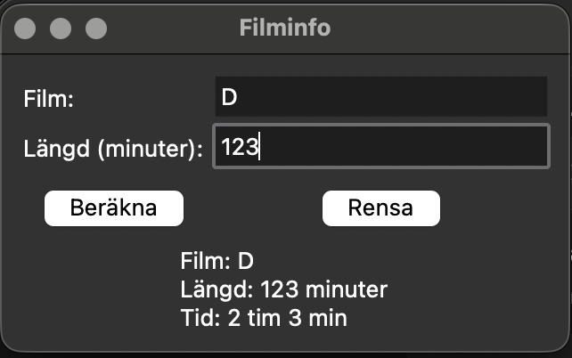

Programmering nivå 1 med Python
Kapitel 14: Projekt
I detta kapitel går du igenom hela projektprocessen: planering, krav, design, implementering, testning, dokumentation och redovisning.
Innehållsförteckning
Klicka på ett avsnitt för att hoppa direkt.
14.1 Planera ett program
Innan du börjar koda måste du planera ditt program.
Många nybörjare hoppar direkt till kod, men då fastnar man ofta.
Planering hjälper dig att
- förstå problemet
- strukturera lösningen
- undvika onödiga fel
Vad innebär planering
Att planera ett program betyder att du bestämmer
- vad programmet ska göra
- vem som ska använda det
- hur det ska fungera
Exempel
Du vill skapa en filmapp. Då kan planeringen vara:
Programmet ska
- låta användaren skriva in filmer
- spara längd på filmer
- visa information om filmer
En enkel plan
Du kan skriva din plan så här:
Program: Filmlista
Programmet ska
- ta emot filmens namn
- ta emot filmens längd
- visa information om filmen
Viktiga frågor att ställa
- Vad är syftet med programmet?
- Vad ska användaren kunna göra?
- Vilken information behövs?
- Hur ska resultatet visas?
Tips
- Börja enkelt
- Gör inte för stort program direkt
- Bygg vidare steg för steg
Koppling till kursen
När du planerar tränar du problemlösning, struktur och förståelse för hur program byggs. Detta används i verkliga projekt.
Övning
Skriv en plan för ett eget program, till exempel:
- en budgetapp
- en träningsapp
- en filmlista
- ett enkelt spel
Skriv:
- vad programmet ska göra
- vad användaren ska kunna göra
- vilken information som behövs
Planen ska vara tydlig och enkel att förstå.
14.2 Kravspecifikation (VAD)
Efter att du har planerat ditt program är nästa steg att skriva en kravspecifikation.
En kravspecifikation beskriver exakt vad programmet ska göra och gör det tydligt vad som ska byggas innan du börjar koda.
Varför behövs en kravspecifikation
En kravspecifikation hjälper dig att
- ha tydliga mål
- undvika missförstånd
- bygga rätt funktioner från början
Vad innehåller en kravspecifikation
En enkel kravspecifikation kan innehålla:
- funktionella krav
- krav på användaren
- krav på hur programmet ska bete sig
Funktionella krav
Funktionella krav beskriver vad programmet ska kunna göra.
Exempel:
- Programmet ska ta emot användarens namn
- Programmet ska ta emot användarens ålder
- Programmet ska beräkna år kvar till pension
- Programmet ska visa resultatet
Krav på användaren
- Användaren ska kunna skriva in text
- Användaren ska kunna skriva in siffror
- Användaren ska förstå vad som ska matas in
Krav på beteende
- Programmet ska visa felmeddelande vid felaktig inmatning
- Programmet ska inte krascha
- Programmet ska visa tydliga instruktioner
Exempel
Program: Filmlista
Funktionella krav
- Programmet ska kunna lägga till en film
- Programmet ska kunna visa alla filmer
- Programmet ska kunna visa filmens längd
Användarkrav
- Användaren ska kunna skriva in filmens namn
- Användaren ska kunna skriva in filmens längd
Beteende
- Programmet ska visa ett tydligt fel om längden inte är ett tal
- Programmet ska visa filmer i en lista
Tips
- Skriv tydligt och konkret
- Undvik otydliga ord som "bra" och "snabb"
- Tänk på användaren
Koppling till kursen
När du skriver kravspecifikation tränar du problemlösning, struktur och anpassning till användare. Detta är viktigt för att nå högre betyg.
Övning
Skriv en kravspecifikation för ditt program från föregående övning och dela upp i:
- funktionella krav
- användarkrav
- beteende
14.3 Design (HUR)
När du har en plan och en kravspecifikation är nästa steg design.
Design handlar om hur programmet ska byggas. Du bestämmer struktur, uppdelning och hur olika delar hänger ihop.
Vad innebär design
Att designa ett program betyder att du bestämmer
- vilka delar programmet ska bestå av
- hur dessa delar ska samarbeta
- hur koden ska organiseras
Dela upp programmet
Ett bra program delas upp i mindre delar. Det gör koden lättare att förstå och arbeta med.
Exempel på steg:
- ta emot inmatning
- bearbeta data
- visa resultat
Exempel
Program: Filmlista
Design
- Del 1 Inmatning: användaren skriver filmens namn och längd
- Del 2 Bearbetning: programmet sparar informationen
- Del 3 Utskrift: programmet visar information om filmen
Pseudokod
Ett sätt att designa är att skriva pseudokod, alltså en beskrivning av programmet med vanliga ord.
Starta program
Fråga efter filmens namn
Fråga efter filmens längd
Spara informationen
Visa filmenEn enkel struktur
Start
Inmatning
Bearbetning
Utskrift
SlutTänk på detta
- Håll designen enkel
- Dela upp i tydliga steg
- Skriv så att någon annan förstår
Koppling till kursen
När du arbetar med design tränar du strukturerad problemlösning, planering av program och förmåga att bygga större program.
Övning
Skriv en design för ditt program med pseudokod. Dela upp i steg som inmatning, bearbetning och utskrift.
14.4 Implementering
Nu är det dags att börja koda.
Implementering betyder att du skriver programmet utifrån din design.
Du går från plan och struktur till fungerande kod.
Vad innebär implementering
Att implementera ett program betyder att du
- skriver koden
- följer din design
- testar under tiden
Arbeta steg för steg
Skriv inte hela programmet direkt.
Bygg i små delar och testa ofta.
Exempel:
- Börja med att ta emot inmatning
- Testa att det fungerar
- Lägg till nästa del
Exempel
def hamta_film():
namn = input("Skriv filmens namn: ")
return namn
def hamta_langd():
while True:
try:
langd = int(input("Skriv filmens längd: "))
return langd
except ValueError:
print("Fel: skriv ett heltal")
def visa_film(namn, langd):
print(f"Film: {namn}")
print(f"Längd: {langd} minuter")
film = hamta_film()
langd = hamta_langd()
visa_film(film, langd)Testa under tiden
Kör programmet ofta.
Testa olika saker:
- skriv rätt värden
- skriv fel värden
- testa gränsfall
Vanliga fel
- syntaxfel (felstavningar i koden)
- logiska fel (programmet gör fel sak)
- felaktig inmatning
Tips
- Skriv tydliga variabelnamn
- Använd funktioner
- Kommentera vid behov
- Testa ofta
Koppling till kursen
När du implementerar tränar du programmering i Python, kontrollstrukturer, felhantering och kodstruktur.
Detta är centralt i kursen.
Övning
Implementera ditt program utifrån din design. Programmet ska ta emot inmatning, bearbeta information och visa resultat.
Extra övning: GUI i Tkinter
Skapa ett program med grafiskt gränssnitt som hanterar information om en film.
Programmet ska
- ta emot filmens namn
- ta emot filmens längd i minuter
- beräkna längden i timmar
- visa resultatet i fönstret
Krav
- Använd Label före varje inmatningsfält
- Använd Entry för input
- Använd en Button som startar beräkningen
- Visa resultatet med en Label
- Visa felmeddelande om längden inte är ett heltal
Tips
- Använd en funktion som körs när knappen klickas
- Använd get() för att läsa data från Entry
- Använd config() för att uppdatera text i Label
Extra utmaning:
- Visa resultatet på flera rader
- Formatera så det står tex 2 tim och 36 min om användaren matar in 123 min
- Testa att skriva fel värden och se vad som händer

14.5 Testning
När programmet är färdigt behöver du testa det. Testning betyder att du kontrollerar att programmet fungerar som det ska.
Du testar både vanliga fall och situationer där något kan bli fel.
Varför är testning viktigt
Testning hjälper dig att
- hitta fel
- förbättra programmet
- se om kraven är uppfyllda
Vad ska man testa
- programmet startar
- inmatning fungerar
- beräkningar blir rätt
- resultatet visas korrekt
- fel hanteras på rätt sätt
Exempel
Du har gjort ett filmprogram. Testa till exempel:
- skriv in ett filmnamn
- skriv in ett vanligt heltal som längd
- kontrollera att rätt resultat visas
Testa sedan felaktiga värden:
- tomt filmnamn
- bokstäver i längdfältet
- negativt tal
- 0
Testfall
Ett testfall är en planerad test. Du bestämmer
- vad du skriver in
- vad som borde hända
- vad som faktiskt händer
Exempel på testfall
Test 1
Inmatning: Interstellar, 169
Förväntat resultat: Programmet visar filmens namn och tiden 2 tim 49 min
Test 2
Inmatning: Tomt namn, 120
Förväntat resultat: Felmeddelande om att filmnamn saknas
Test 3
Inmatning: Avatar, abc
Förväntat resultat: Felmeddelande om att längden måste vara ett heltal
Test 4
Inmatning: Dune, -5
Förväntat resultat: Felmeddelande om att längden måste vara större än 0
Dokumentera testningen
Det är bra att skriva ner dina tester. Då ser du tydligt vad du har testat, vilka fel du hittat och vad du behöver ändra.
Tips
- Testa både rätt och fel värden
- Testa flera olika situationer
- Ändra en sak i taget om något går fel
Koppling till kursen
När du testar tränar du att hitta syntaxfel, logiska fel, förebygga fel och förbättra programkvalitet.
Övning
Testa ditt program med minst fyra olika testfall. Skriv för varje testfall:
- vilken inmatning du använder
- vad du förväntar dig
- vad som faktiskt händer
Fundera på om du behöver ändra något i programmet efter testningen.
14.6 Dokumentation
När programmet är klart behöver det dokumenteras. Dokumentation betyder att du beskriver hur programmet fungerar.
Det gör det lättare för dig själv och andra att förstå koden.
Varför behövs dokumentation
Dokumentation hjälper dig att
- förklara programmet
- visa hur det fungerar
- göra koden lättare att förstå senare
Vad kan dokumenteras
- vad programmet gör
- hur programmet används
- hur koden är uppbyggd
- vilka delar som är viktiga
Kommentarer i kod
Ett vanligt sätt att dokumentera är kommentarer i koden.
# Hämtar filmens namn från användaren
namn = entry_namn.get()Du ska inte kommentera varje rad i onödan, utan där kommentarer faktiskt hjälper läsaren.
Beskrivning av programmet
Det är också bra att skriva en kort text om programmet, till exempel:
Programmet tar emot ett filmnamn och en längd i minuter. Sedan räknar programmet om tiden till timmar och minuter. Resultatet visas i programmets fönster.
Beskrivning av viktiga delar
Du kan förklara viktiga delar, till exempel vad en funktion gör, hur fel hanteras och hur resultat visas.
Exempel: Funktionen berakna() läser in värden, kontrollerar längden och visar resultatet i fönstret.
Vad bra dokumentation kännetecknas av
Bra dokumentation är
- tydlig
- kortfattad
- relevant
- lätt att förstå
Tips
- Skriv så att en annan elev förstår
- Förklara viktiga delar
- Håll dokumentationen enkel och tydlig
Koppling till kursen
När du dokumenterar tränar du god struktur, tydlig kommunikation och förståelse för kodens uppbyggnad.
Övning
Dokumentera ditt program. Skriv:
- en kort beskrivning av vad programmet gör
- kommentarer till viktiga delar i koden
- en förklaring av hur användaren använder programmet
14.7 Redovisning
När ett program är klart ska det ofta redovisas.
Redovisning betyder att du visar upp ditt arbete och förklarar hur du har tänkt.
Det handlar inte bara om att visa att programmet fungerar, utan också om att beskriva hur du planerade, byggde, testade och förbättrade programmet.
Varför redovisning är viktigt
En redovisning hjälper dig att
- visa vad du har gjort
- förklara hur programmet fungerar
- visa hur du har löst problem
- visa att du förstår din egen kod
Vad en redovisning kan innehålla
- vad programmet gör
- vem programmet är gjort för
- vilka krav du utgick från
- hur du designade programmet
- hur du implementerade det
- hur du testade det
- vilka problem du stötte på
- hur du löste dem
Beskriv projektet
Exempel:
Jag har gjort ett filmprogram i Tkinter. Användaren kan skriva in en films namn och dess längd i minuter. Programmet räknar om tiden till timmar och minuter och visar resultatet i fönstret.
Beskriv din planering
Exempel:
Först planerade jag vad programmet skulle göra. Sedan skrev jag en kravspecifikation. Efter det gjorde jag en enkel design där jag bestämde vilka delar programmet skulle ha.
Beskriv hur programmet fungerar
Exempel:
Programmet har två inmatningsfält och två knappar. En knapp används för att räkna ut resultatet. Den andra används för att rensa fälten. Programmet kontrollerar också om användaren skriver fel.
Beskriv problem och lösningar
Exempel:
Ett problem var att användaren kunde skriva bokstäver i längdfältet. Det löste jag med try/except.
Ett annat problem var att användaren kunde lämna filmnamnet tomt. Det löste jag med en kontroll som visar ett felmeddelande.
Beskriv testningen
Exempel:
Jag testade både korrekta och felaktiga värden. Jag testade till exempel ett vanligt tal, ett negativt tal, text i längdfältet och tomt namn.
Visa förbättringar
Exempel:
Om jag skulle fortsätta utveckla programmet skulle jag kunna lägga till en lista med flera filmer. Jag skulle också kunna spara filmer i en fil.
Tips inför redovisning
- Använd tydliga ord
- Visa programmet steg för steg
- Förklara varför du gjort vissa val
- Var beredd att beskriva hur koden fungerar
Koppling till kursen
När du redovisar tränar du att beskriva projektarbete, visa problemlösning och förklara hur större program byggs.
Övning
Förbered en kort redovisning av ditt program. Ta med:
- vad programmet gör
- hur du planerade arbetet
- hur programmet är uppbyggt
- vilka problem du löste
- hur du testade programmet
- vad du skulle vilja förbättra vidare